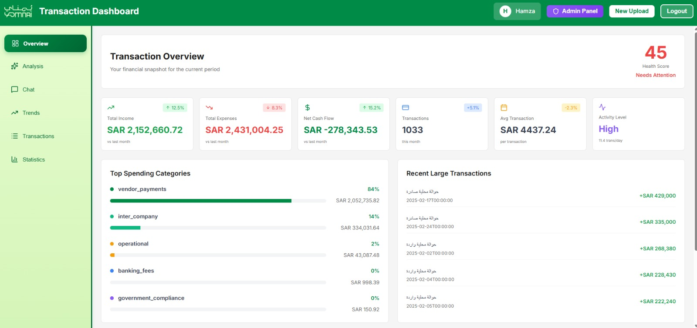
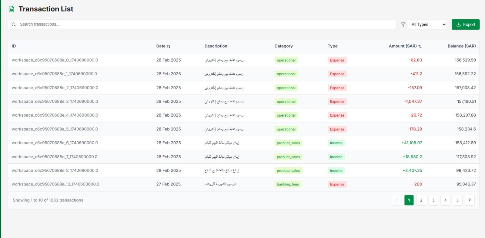
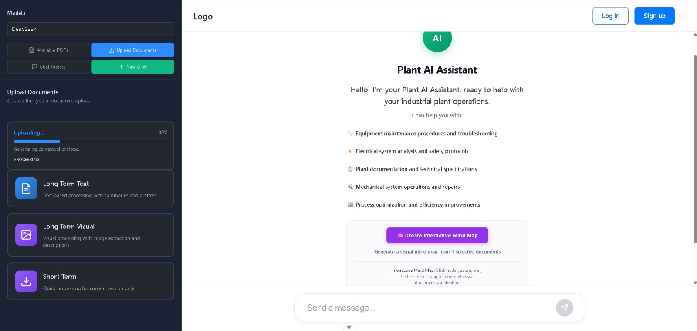
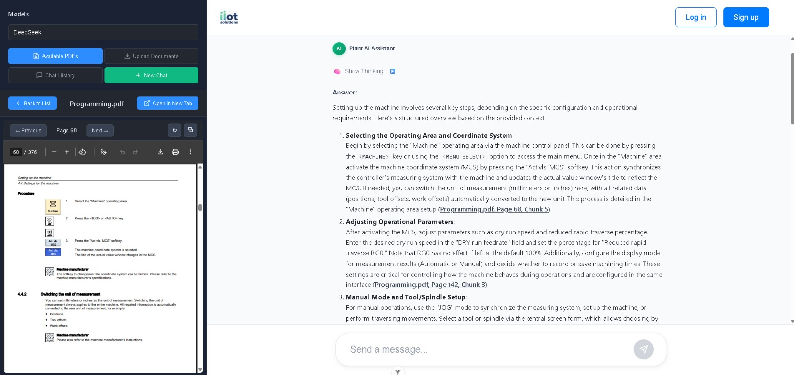
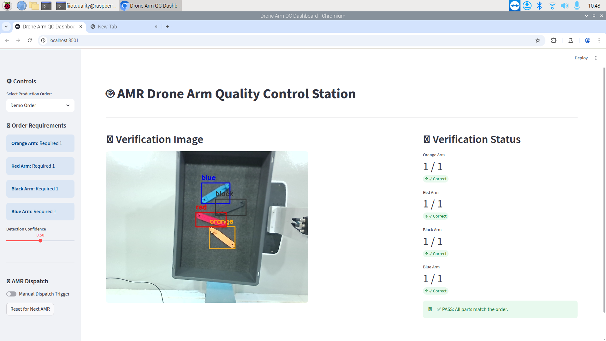
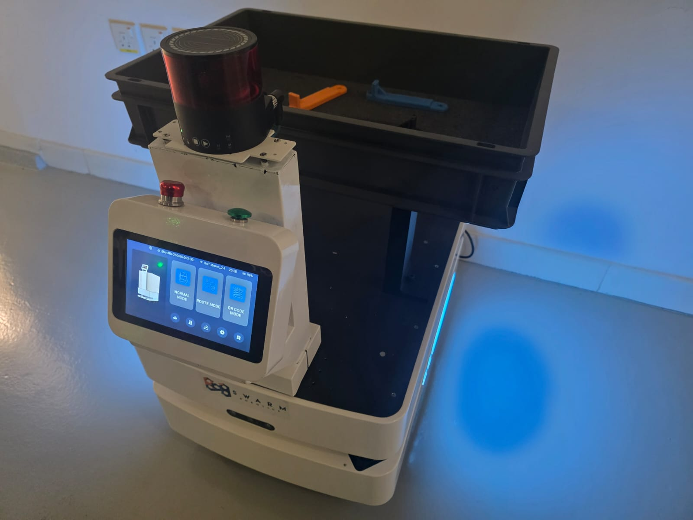

الدور والمسؤوليات
بصفتي مطور ذكاء اصطناعي في IIoT Solutions، فأنا مسؤول عن دورة الحياة الكاملة لأنظمة الذكاء الاصطناعي والأتمتة لدينا، بدءاً من تصميم البنية المعمارية الأولية وحتى النشر والصيانة في بيئة الإنتاج.
يمتد عملي عبر ثلاثة أنظمة إنتاج رئيسية: منصة تحليل مالي Agentic AI، وروبوت محادثة صناعي للتشخيص مزود بقدرات رؤية، ونظام أتمتة روبوتي فعلي يدمج ROS2 مع الرؤية الحاسوبية.
أداة تحليل مالي Agentic AI للشركات الصغيرة والمتوسطة
نظام متعدد الوكلاء يعمل بشكل ذاتي لاستخبارات المال والأعمال
نظرة عامة
أقوم بتصميم وبناء تطبيق Agentic AI متقدم لتقديم تحليل مالي عميق وذاتي للشركات الصغيرة والمتوسطة. يستوعب النظام المعاملات البنكية والبيانات المالية المعقدة ويعالجها باستخدام فريق من وكلاء الذكاء الاصطناعي وتقنيات RAG لاكتشاف الاتجاهات، ورصد الحالات الشاذة، وتقديم رؤى عملية بصياغة طبيعية واضحة.
دوري
المطور الرئيسي للنظام بالكامل، من معمارية الذكاء الاصطناعي إلى الواجهة الخلفية والواجهة الأمامية، بما في ذلك تصميم تدفقات العمل الوكيلة وخطوط RAG.
الميزات الرئيسية
- فريق وكلاء ذكاء اصطناعي: عدة وكلاء متخصصين يعملون بشكل تعاوني باستخدام إطار LangChain
- خط RAG: توليد معزز بالاسترجاع لتقديم رؤى مالية واعية بالسياق
- دعم متعدد اللغات: استخدام نموذج "Allam" مفتوح المصدر لترجمات عربية عالية الدقة
- معالجة المعاملات: استيعاب وتحليل تلقائي لكشوف الحسابات البنكية والمستندات المالية
- اكتشاف الشذوذ: تحديد الاتجاهات والحالات غير الطبيعية بالذكاء الاصطناعي
- بنية جاهزة للمستقبل: مصممة لدعم تخصيص وضبط نماذج LLM مع تطور النظام
التقنيات
لقطات شاشة


روبوت محادثة بالذكاء الاصطناعي للهندسة الصناعية والتشخيص
نظام Vision RAG للوثائق التقنية
نظرة عامة
قدت التطوير الكامل لتطبيق روبوت محادثة بالذكاء الاصطناعي مصمم خصيصاً للتطبيقات الصناعية. الهدف الأساسي منه هو مساعدة المهندسين عبر استيعاب وفهم وثائق الآلات المعقدة، بما في ذلك ملفات PDF والرسومات التقنية. يستخدمه المهندسون لتشخيص الأعطال، وفهم إنذارات الآلات، والحصول على إجابات فورية للأسئلة الفنية.
دوري
تطوير Full-Stack — قمت ببناء الواجهة الخلفية باستخدام Python/FastAPI والواجهة الأمامية المتجاوبة باستخدام React من الصفر.
الميزات الرئيسية والابتكارات التقنية
- خط Vision RAG متقدم: يعالج النصوص والرسومات من الوثائق التقنية باستخدام نماذج اللغة والرؤية
- Contextual Retrieval من Anthropic: تم تطبيق استراتيجيات استرجاع سياقي متقدمة ضمن RAG، ما حسّن دقة الإجابات وارتباطها بالسياق بشكل واضح مقارنة بالاسترجاع التقليدي
- فهم متعدد الوسائط: يستخرج المعلومات من النصوص والرسومات المرئية داخل ملفات PDF
- تشخيص الأعطال لحظياً: يساعد المهندسين على تشخيص أعطال الآلات وفهم أكواد الإنذار فوراً
- تكامل WebSocket: استجابات بث مباشر لتغذية راجعة فورية
- إسناد المصادر: يذكر المقاطع المحددة من الوثائق لسهولة التحقق
التقنيات
لقطات شاشة


روبوت متنقل ذاتي (AMR) ونظام توجيه معتمد على الرؤية
تكامل ROS2 مع الرؤية بالذكاء الاصطناعي لأتمتة الإنتاج
نظرة عامة
لعبت دوراً محورياً في ربط مبادرات الذكاء الاصطناعي بالعمليات الروبوتية الفعلية. نجحت في دمج روبوت متنقل ذاتي جديد ضمن خط الإنتاج الرئيسي، وطورت نظام توجيه قائم على الرؤية يقوم بتوجيه الروبوت ذاتياً استناداً إلى المدخلات البصرية الفورية.
دوري
مسؤول عن تصميم وتنفيذ التكامل الكامل بين الروبوت المتنقل الذاتي وبرمجيات إدارة المصنع ونظام الرؤية بالذكاء الاصطناعي.
الميزات الرئيسية والتنفيذ التقني
- تكامل ROS2: إنشاء اتصال قوي ثنائي الاتجاه بين نظام ROS2 الموجود على الروبوت وبرمجيات إدارة المصنع المركزية عبر REST APIs
- نظام توجيه بالرؤية والذكاء الاصطناعي: تدريب ونشر نموذج YOLO لاكتشاف الألوان لحظياً في محطات الإنتاج
- توجيه ذكي: يتعرف النظام على لون ذراع الطائرة بدون طيار في المحطة، وبناءً على هذا اللون يوجّه الروبوت المتنقل ذاتياً إلى الموقع الصحيح التالي
- تكامل مع خط الإنتاج: دمج سلس مع تدفقات العمل والأنظمة القائمة في المصنع
- اتخاذ قرار لحظي: نموذج الرؤية يعالج تغذية الكاميرا ويتخذ قرارات التوجيه في الوقت الحقيقي
التقنيات
لقطات شاشة


الأثر والنطاق
أنظمة إنتاج رئيسية
من معمارية الذكاء الاصطناعي إلى النشر
ذكاء اصطناعي برمجي + روبوتات فعلية